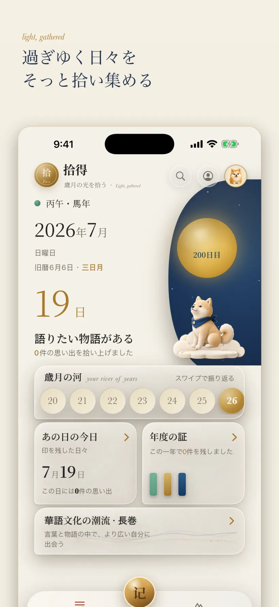

ENSŌ SHIDE
简体中文 · 繁體中文 · English · 日本語ENSŌ SHIDE
简体中文 · 繁體中文 · English · 日本語ENSŌ SHIDE
简体中文 · 繁體中文 · English · 日本語
ENSŌ SHIDE
简体中文 · 繁體中文 · English · 日本語ENSŌ SHIDE
简体中文 · 繁體中文 · English · 日本語ENSŌ SHIDE
简体中文 · 繁體中文 · English · 日本語機能と実装状況
「拾得 Ensō」は、1980 年から現在まで幾世代もの華人が共有してきた文化の座標に沿って人生の記憶を書き留め、次の世代へ渡す中国語・英語の歳月の書に編める、海外華人のためのローカルファーストな iOS アプリです。アカウント不要、アップロードなし。
このページは、現在のリポジトリで確認できる機能だけを掲載しています。製品目標や未デプロイのサービスを、出荷済みの機能として提示することはありません。

Memory・Profile・Keepsake・CompanionState は SwiftData を使用します。MemoryWriter がプライベートな記憶の共通書き込み経路を担い、マイグレーションコードが古いレコードを橋渡しします。
公開文化アイテムは読み取り専用のコンテキストとして取得されます。プライベートなスタンプはローカルにスナップショットと参照を保存するもので、ユーザーのメモを公開カタログへ書き戻すことはありません。
v1 のコンパニオンはローカルの ConversationGraph 経路を使用します。プレミアムの製本は決定論的な端末内レンダラーを用います。オンライン AI は任意の Ensō+ サブスクリプション機能で、必要なときにのみ使用します。
拾得は節句・行事に合わせて季節の文化特集（中秋節など）を公開し、その時節の公共文化座標を一つの入り口にまとめます。特集も個々の文化イベントもユニバーサルリンク（Universal Link）によるディープリンクに対応し、開くとそのまま App 内の該当ページに遷移します。
端末内と AI の二経路による製本は、複数の作家文体スタイルと版式に対応します。完成した本は中国語・英語の対訳に対応し、さらに中国語・英語・日本語それぞれの単一言語版も用意しているため、年配のご家族と次の世代がそれぞれ読みやすい版を選べます。